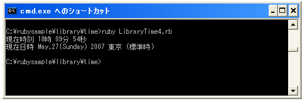

- Home ›
- Ruby入門 ›
- 時刻(Time)クラス
指定フォーマットで文字列に変換する
広告
現在時刻や時刻を指定してTimeクラスのオブジェクトを作成した後で任意に指定したフォーマットで文字列として取得する方法を確認します。Timeクラスで用意されている「strftime」メソッドを使います。
変数 = Timeオブジェクト.strftime(format文字列)
引数として出力したい形式を表す文字列を指定します。フォーマット文字列には普通の文字列の他に以下のような特別な文字列を指定することが出来ます。
| フォーマット文字列 | 出力形式 |
|---|---|
| %A | 曜日の名称(Sunday, Monday ... ) |
| %a | 曜日の省略名(Sun, Mon ... ) |
| %B | 月の名称(January, February ... ) |
| %b | 月の省略名(Jan, Feb ... ) |
| %c | 日付と時刻 |
| %d | 日(01-31) |
| %H | 24時間制の時(00-23) |
| %I | 12時間制の時(01-12) |
| %j | 年中の通算日(001-366) |
| %M | 分(00-59) |
| %m | 月を表す数字(01-12) |
| %p | 午前または午後(AM,PM) |
| %S | 秒(00-60) (60はうるう秒) |
| %U | 週を表す数。最初の日曜日が第1週の始まり(00-53) |
| %W | 週を表す数。最初の月曜日が第1週の始まり(00-53) |
| %w | 曜日を表す数。日曜日が0(0-6) |
| %X | 時刻 |
| %x | 日付 |
| %Y | 西暦を表す数 |
| %y | 西暦の下2桁(00-99) |
| %Z | タイムゾーン |
| %% | %自身 |
例えば次のように使用します。
t = Time.now
str = t.strftime("現在時刻 %H時 %M分 %S秒")
サンプルプログラム
では簡単なサンプルで試してみます。
#! ruby -Ks
t = Time.now
strTime = t.strftime("現在時刻 %H時 %M分 %S秒")
print(strTime, "¥n")
strDay = t.strftime("現在日時 %B,%d(%A) %Y %Z")
print(strDay, "¥n")
実行結果は次のようになります。

( Written by Tatsuo Ikura )
Profile

著者 / TATSUO IKURA
初心者～中級者の方を対象としたプログラミング方法や開発環境の構築の解説を行うサイトの運営を行っています。